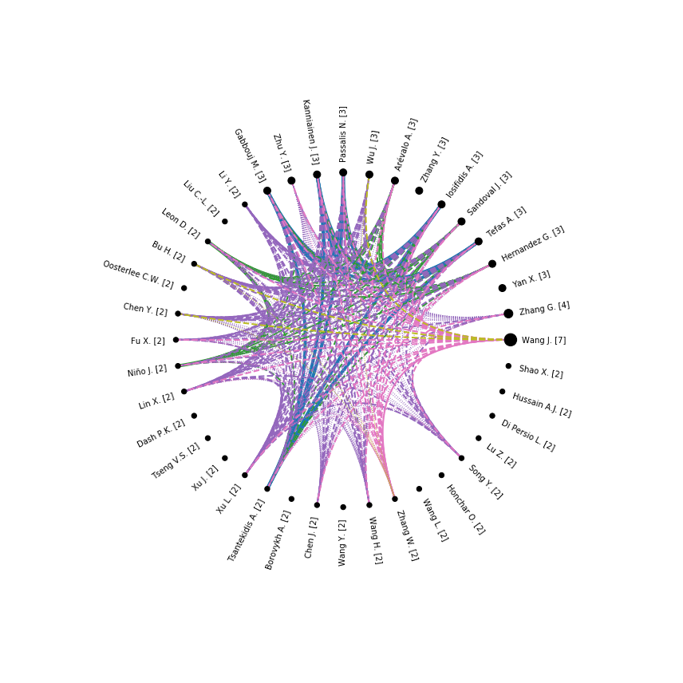

[1]:
# Install latest version from GitHub
!pip install -q -U git+https://github.com/jdvelasq/techminer
Factor analysis (Experimental)¶
[1]:
#
# Data loading
#
import matplotlib.pyplot as plt
import pandas as pd
url = "https://raw.githubusercontent.com/jdvelasq/techminer/master/data/tutorial/"
df = pd.read_json(url + "cleaned-data.json", orient="records", lines=True)
[2]:
import matplotlib.pyplot as plt
from techminer import DataFrame, Plot
df = DataFrame(df)
Authors¶
[2]:
# rdf.factor_analysis(column="Authors", sep=",", n_components=5, top_n=40).tomatrix()
[2]:
| F0 | F1 | F2 | F3 | F4 | |
|---|---|---|---|---|---|
| Wang J. [7] | -0.025355 | -0.040096 | -0.695298 | 0.624399 | 0.223693 |
| Zhang G. [4] | -0.017487 | -0.028221 | 0.452656 | 0.559642 | -0.167425 |
| Yan X. [3] | -0.010094 | -0.013940 | -0.057740 | -0.006361 | -0.018068 |
| Hernandez G. [3] | -0.029542 | 0.489821 | 0.002071 | 0.023022 | 0.012202 |
| Tefas A. [3] | 0.425717 | 0.023641 | 0.001237 | 0.014415 | 0.007825 |
| Sandoval J. [3] | -0.029542 | 0.489821 | 0.002071 | 0.023022 | 0.012202 |
| Iosifidis A. [3] | 0.425717 | 0.023641 | 0.001237 | 0.014415 | 0.007825 |
| Zhang Y. [3] | -0.009956 | -0.013467 | -0.004766 | -0.074681 | -0.048900 |
| Arévalo A. [3] | -0.029542 | 0.489821 | 0.002071 | 0.023022 | 0.012202 |
| Wu J. [3] | -0.012591 | -0.019739 | 0.186196 | -0.042854 | 0.672821 |
| Passalis N. [3] | 0.425717 | 0.023641 | 0.001237 | 0.014415 | 0.007825 |
| Kanniainen J. [3] | 0.425717 | 0.023641 | 0.001237 | 0.014415 | 0.007825 |
| Zhu Y. [3] | -0.012706 | -0.020151 | 0.272582 | 0.284154 | -0.013801 |
| Gabbouj M. [3] | 0.425717 | 0.023641 | 0.001237 | 0.014415 | 0.007825 |
| Li Y. [2] | -0.006412 | -0.008670 | 0.023064 | -0.008779 | -0.001746 |
| Liu C.-L. [2] | -0.006824 | -0.009375 | -0.003671 | -0.060149 | -0.040898 |
| Leon D. [2] | -0.021473 | 0.368211 | 0.001752 | 0.020010 | 0.010791 |
| Bu H. [2] | -0.008162 | -0.012594 | 0.099892 | -0.066203 | 0.469863 |
| Oosterlee C.W. [2] | -0.006824 | -0.009375 | -0.003671 | -0.060149 | -0.040898 |
| Chen Y. [2] | -0.007328 | -0.010763 | 0.064704 | -0.057130 | 0.317516 |
| Fu X. [2] | -0.008615 | -0.013808 | 0.187364 | 0.135807 | 0.204446 |
| Niño J. [2] | -0.021473 | 0.368211 | 0.001752 | 0.020010 | 0.010791 |
| Lin X. [2] | -0.006456 | -0.008818 | 0.039084 | 0.027539 | -0.040955 |
| Dash P.K. [2] | -0.005856 | -0.007459 | -0.001960 | -0.027839 | -0.016956 |
| Tseng V.S. [2] | -0.006824 | -0.009375 | -0.003671 | -0.060149 | -0.040898 |
| Xu J. [2] | -0.005856 | -0.007459 | -0.001960 | -0.027839 | -0.016956 |
| Xu L. [2] | -0.008337 | -0.013228 | 0.208996 | 0.272781 | -0.114969 |
| Tsantekidis A. [2] | 0.296071 | 0.016706 | 0.000922 | 0.010877 | 0.005949 |
| Borovykh A. [2] | -0.006824 | -0.009375 | -0.003671 | -0.060149 | -0.040898 |
| Chen J. [2] | -0.008817 | -0.014159 | 0.173627 | 0.092506 | 0.250997 |
| Wang Y. [2] | -0.005856 | -0.007459 | -0.001960 | -0.027839 | -0.016956 |
| Wang H. [2] | -0.007837 | -0.011852 | 0.107390 | 0.070967 | 0.051962 |
| Zhang W. [2] | -0.008370 | -0.012982 | -0.177433 | 0.138155 | 0.043232 |
| Wang L. [2] | -0.006562 | -0.008835 | -0.003071 | -0.047897 | -0.031269 |
| Honchar O. [2] | -0.006824 | -0.009375 | -0.003671 | -0.060149 | -0.040898 |
| Song Y. [2] | -0.008455 | -0.013304 | 0.176142 | 0.206186 | -0.081990 |
| Lu Z. [2] | -0.005856 | -0.007459 | -0.001960 | -0.027839 | -0.016956 |
| Di Persio L. [2] | -0.006824 | -0.009375 | -0.003671 | -0.060149 | -0.040898 |
| Hussain A.J. [2] | -0.005856 | -0.007459 | -0.001960 | -0.027839 | -0.016956 |
| Shao X. [2] | -0.005856 | -0.007459 | -0.001960 | -0.027839 | -0.016956 |
[3]:
plt.figure(figsize=(4,9))
Plot(df.factor_analysis(column="Authors", sep=",", n_components=5, as_matrix=True)).heatmap(cmap='Blues')

[4]:
# rdf.factor_analysis(column="Authors", sep=",", n_components=5, top_n=40).chord_diagram()
